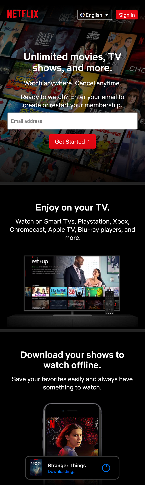
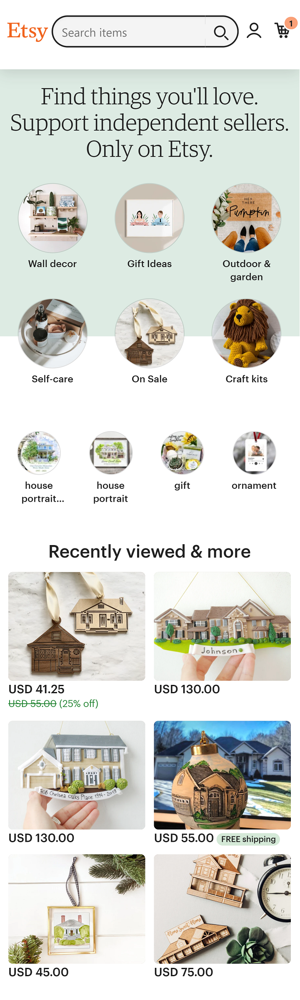
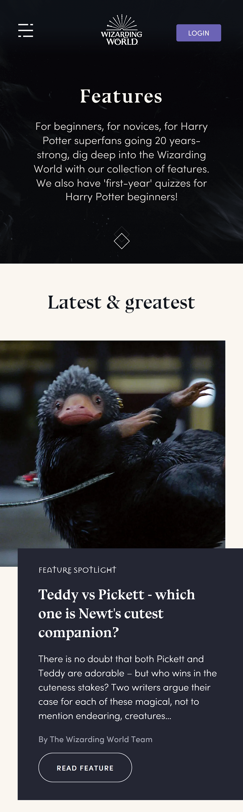

Repetition
Netflix
netflix.com The Netflix website is a great example of Repetition. The website is divided into different sections designed with the same aspect, font size, and space.
Visual Hierarchy
Etsy
etsy.com The Etsy website is a great example of Visual Hierarchy. You can see that the most important aspects outstand by their color, size, and layout.
Contrast
Wizarding World
wizardingworld.com The Wizarding World website is a great example of contrast. The font styles, colors, layout, and design are all different, but they get along pretty well.